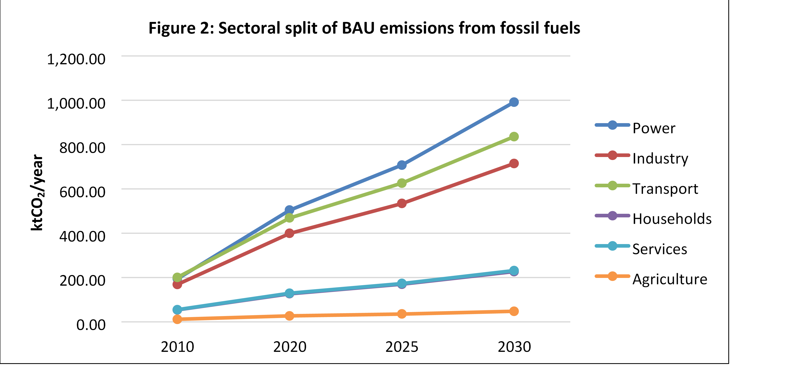

September 2015 Asmara, Eritrea
Eritrea had ratified the United Nations Framework Convention on Climate Change (UNFCCC) in 1995. Moreover, as follow up to the Warsaw proposal followed by the Lima call for climate action, Eritrea has prepared its Intended Nationally Determined Contribution (INDC) for the period 20202030with the view that global determination to tackle the effects of climate change calls for commitment from all parties with regard to mitigation, adaptation and implementation.
In developing its INDC, Eritrea undertook a broad stakeholders representation and consultation processes. This process allowed for the baseline assessment, and review of policies and programs that are being implemented by the Government of the State of Eritrea to combat global warming and for the level of ambition to which the country wants to commit in its INDC.
In the mitigation, the main gases covered are CO2, CH4 and N2O. Key sectors that contribute to the greenhouse gases emission are: Energy, Transport, Industry, Waste, Forestry and Agriculture. Vulnerable sectors to impacts of climate change that need adaption measures include Agriculture, Marine resources, Health, water and land resources.
In 2010, the total greenhouse gases emission estimated using the GACMO model amounts to ktCO2 3972, whereas, the business as usual scenario of GHGs emission in the year 2030 isexpected to be ktCO2 6331.
The country focussing on the energy sector assumes two scenarios, in the mitigation of the greenhouse gases emission plans for the next 15 years: reducing by 39.2% unconditionally and 80.6 % in the conditional scenario assuming external assistance compared to the business as usual scenarios.
The INDCs also presents concrete measures and steps that need to be taken in the implementation the projects and programs. These include, capacity building, technology transfer, financial support and partnership with regional and international agencies involved in climate change.
To ensure effective implementation of the INDC program, M & E tools are proposed. This includes periodic monitoring of the activities stipulated in the project documents so as to verify the right direction towards the intended outcome in mitigation and adaption.
Eritrea is located in the Horn of Africa, lying between 12°22′, and 18°02′north and between 36°26′ and 43°13′east. Sudan borders it in the west, Ethiopia in the south, Djibouti in the south east, and the Red Sea in the east. The country has a total land area of 124,300 km2, and a coast line of 1900km. Eritrea’s territorial waters in the Red Sea zone is about 120,000 km2.
It has diversified Eco geographic zones that provide unique habitat for the marine terrestrial fauna and flora. In 2010, the population of Eritrea was estimated to be 3.2 million with an annual population growth rate of 2.9%, comprising of 65% living in the rural areas. The economic activity, for most of the population, mainly relies on rain fed agriculture and artisanal fisheries.
Climatically 70% of the country is hot to very hot with annual mean temperatures of 27°C; 20% is mild with temperature of 19°C and the remaining 10% is cool with mean temperature of less than 19°C. Eritrea is vulnerable to climate change and boththe marine and terrestrial ecosystems have been negatively affected.Over the past 60 years temperature has risen by approximately 1.7°C with tremendous impact on biodiversity losses, sea level rise and coral bleaching due to increase in sea water temperature, decline in food production, loss of biodiversity and overall loss of resilience of the ecosystem. Hence, the country plans to adapt climate smart technologies to counteract the adverse impacts of climate change, so as to improve the health and social wellbeing of the population.
Against the above background, the purpose of the preparation of the INDCs is to promote environmentally sound, socially acceptable and climate resilient economic development by following lowcarbon development path and increasing adapting capacity to the adverse impacts of climate change.
Under paragraph 14 of the Lima Call for Climate Action, countries were invited to describe how their intended nationally determined contribution “contributes to the achievement of the objective of the Convention” (UNFCCC 2014). The latest climate science shows what needs to be happening globally in order to have a probably chance of limiting warming to 2°C, the goal adopted by the UNFCCC. Global emissions must peak by 2020, and net GHG emissions must be phased out over the Long term. This will require all major emitting regions to make substantial reductions below their projected baseline business-as-usual emissions over the course of this century. Cumulative global emissions must remain within the carbon budget, which is the maximum amount of cumulative carbon the world can emit to have a probably chance of limiting warming to 2°C.
The rainfall regime varies in space and time. It ranges from 50mm along the coastal area to 1000 mm in smaller area along the eastern escarpment; 50% of the country receive less than 300mm; 40% 300600mm, and 10% greater than 600mm. Hence, by virtue of its geographical location, Eritrea is prone to climatic variability i.e. recurrent droughts, (decrease in amount of rainfall from 550 to 400mm in the highlands), changes in seasonality that had resulted frequent crop failure, massive death of livestock, genetic erosion, extinction of endemic species, degradation of habitats and disequilibria in the ecosystem structure and function.
The impact of climate change is manifested in recurrent droughts, desertification, sea level rise and increase in sea water temperature, depletion of ground water, widespread land degradation, and emergence of climate sensitive diseases. The combined net effect has resulted in food insecurity.
Eritrea is committed to gender equity and social justice. 30% of the National Assembly is composed of women.
Increased climate variability has already been evidenced in Eritrea. Eritrea has experienced frequent and recurrent droughts since the early 1920s which has aggravated food insecurity and poverty. The spread of malaria in the highlands, which has never been experienced before, desertification and decline in biodiversity have also been witnessed. A number of recent assessments have revealed that observed climate change already has serious impacts on socioeconomic systems and livelihoods of the country.
As Shown in Table 1 Eritrea has already developed various macro and micro polices and legal instruments, plans, guidelines and communication documents which have important contribution to the adaptation and mitigation of climate change. Eritrea has prepared its INDC based on these national documents.
Table 1: list of national policies, strategies and legal frame works
| National Policy Documents | Year |
|---|---|
| • Macro Policy, GOE | 1994 |
| • National Constitution, GOE | 1997 |
| • National Economic Policy Framework and Program (NEPFP), GOE | 1998-2000 |
| • InterimPoverty Reduction Strategy Paper (IPRSP), GOE | 2003 |
| • The Five Year Indicative Development Plan (FYIDP), GOE | 2009 |
| • Ten Year LongTerm Indicative Perspective Development Plan (TYIPDP), GOE | 2009 |
| Multi Focal Area / Crosscutting | |
| • National Environmental Management Plan | 1995 |
| • National Environmental Assessment Procedures & Guidelines | 1999 |
| • National Agricultural Development Strategy and Policy | 1994/2005 (draft) |
| • Forest and Wildlife Policy | 2005 |
| • Agriculture Sector Policy | 2006 |
| • Land Use Policy | 2007 |
| • Water Policy | 2007 |
| • Water Law, Proclamation No. 162, | 2010 |
| • National Health Policy | 2010 |
| • Integrated Water Resource Management Action Plan | 2009 |
| • Environmental Health Policy | 1998 |
| • Rural Sanitation Policy | 2007 |
| • Fishery Proclamation | 2014 |
| • Fisheries Product Proclamation | 1998 |
| Biodiversity | |
| • National Biodiversity Strategy and Action Plan (NBSAP) | 1996, 2000, 2014 |
| • Proclamation on Conservation of Biodiversity | 1998 |
| • Forest and Wildlife Conservation and Development Proclamation No. 155 | 2006 |
| Climate Change and Energy | |
| • Renewable Energy SubSector Policy | 1997 |
| • National Adaptation Program of Action | 2007 |
| • Second National Communication (SNC) | 2012 |
| Land Degradation | |
| • Land Proclamation No.58 | 1994 |
| • Land Use Planning Regulatory Framework | 1999 |
| • National Action Program | 2002 |
| • Five Year Action Plan for The Great Green Wall Initiative (Draft) | 2011-2015 |
Eritrea intends to undertake mitigation and adaptation initiatives to reduce the vulnerability of its population, environment and economy to the adverse effects of climate change, based on its Climate Resilient Sustainable Economy Development policy for addressing both climate change adaptation and mitigation goals. This would ensure a resilient economic development pathway and in the long run, Eritrea envisages achieving its goals of becoming climate change responsive country with equitable economic growth by ensuring a rapid transition to lowcarbon economy.
To this end, Eritrea intends to raise the share of electricity generation from renewable energy to 70% of the total electricity generation mix (wind, solar and geothermal). Moreover it intends to reduce transmission and distribution losses at least by 50%. On the other hand to enhance energy conservation it is intended to introduce: rail transportation to cover about 400km for mass transportation of freight with estimated cost of about USD 1billion and uses of big buses for passenger transport to a long distance.
2010
2030
Carbon dioxide (CO2), Methane (CH4), and Nitrous Oxide (N2O)
Geographical coverage includes all territories of Eritrea and most sectors are covered in the contribution of the greenhouse Gases (GHG) reduction. Climate mitigation actions are proposed mainly in energy, industry, transport, forestry, agriculture (Crop and livestock) and waste sectors. Table 2 provides a summary of Eritrea’s mitigation options proposed in different sectors and sub sectors.
Table 2: Eritrea Sectoral Coverage under the mitigation measure
| Conditional GHG reduction options | Emission reduction in 2030 per option kt/year | Conditional GHG reduction options | Emission reduction in 2030 per option kt/year |
|---|---|---|---|
| Cogeneration in industry | 31.16 | Solar LED lamps | 2.75 |
| Waste heat recovery at cement plant | 61.56 | Assisted forest regeneration | 391.88 |
| Efficient domestic lighting with CFLs | 39.11 | Biogas at big farms | 28.10 |
| Efficient domestic lighting with LEDs | 60.03 | Composting of Municipal Solid Waste | 12.12 |
| Geothermal power | 315.00 | Biodiesel from MSW | 107.11 |
| Wind turbines, onshore | 155.00 | Efficient wood stoves | 488.15 |
| Efficient residential airconditioning | 18.07 | Biogas at rural farms | 45.10 |
| Efficient office lighting with CFLs | 3.30 | Charcoal production | 14.10 |
| Efficient electric stoves | 17.25 | Clinker replacement | 167.90 |
| Efficient street lights | 24.21 | LPG stoves replacing wood stoves | 232.31 |
| Solar PVs, large grid | 127.29 | Efficient electric grids | 58.80 |
| Efficient refrigerators | 26.37 | Reforestation | 1.98 |
| Restriction on import of used cars | 27.94 | ||
| Total | 3048 | ||
The government of the State of Eritrea is committed to reduce the CO2 emissions from fossil fuels by 23.1% in 2020, 30.2 % by 2025 and 39.2% by 2030 visavis to the reference year. If additional support is solicited, it can be further reduced by 36.4 % in 2020, 61.1% by 2015 and 80.6% by 2030.
The BAU scenario for all GHG gases expected to increase to: 5 MtCO2eq in 2020, 5.5 MtCO2eq in 2025 and in 2030 6.3 MtCO2eq. Therefore, Eritrea intends to limit its net greenhouse gas (GHGs) emissions in 2030 to less than 3.9 MtCO2eq. This would constitute a 39% reduction from the projected ‘business‐as‐usual’ (BAU) emissions in 2030 or 80.6% reduction from the reducible BAU scenario in 2030 as shown in Figure 1.
The BAU scenario for all fossil fuel CO2 emission expected to increase 1.7 MtCO2 in 2020, 2.2 MtCO2in 2025 and in 2030, 3 MtCO2.
Unconditional mitigation scenario: With internal resources Eritrea can implement its unconditional scenario reaching 1.3 MtCO2 in 2020, 1.6 MtCO2 in 2025 and 1.9 MtCO2 in 2030from fossil fuel CO2.
Conditional mitigation scenario: With external assistances Eritrea can implement its conditional scenario reaching 1.1 MtCO2 In 2020, 0.9 MtCO2 in 2025 and 0.6 MtCO2 in 2030from fossil fuel CO2.

The methodology used to estimate CH4 and N2O emissions were calculated based on IPCC guidelines of 2006 Volume 4 and Good Practice Guidance (GPG) 2003 and emissions from waste and industrial process was taken from the Second National Communication (SNC). The basis for the calculation of the emission reduction is the projection of GHGs from the 2010 inventory using the GACMO model (2015). The GACMO model was also used to calculate the abatement potential and corresponding investment requirement.
Eritrea in its policy encourages environmentally sound technologies to reduce the greenhouse gas emissions. It has committed itself and has embarked on an ambitious lowcarbon and climateresilient development pathway to achieve its development aspirations. The focus is to create a climateresilient economy while contributing to the GHGs emission reduction up to 80.6% of the emissions from fossil fuels. Moreover, the Eritrean energy sector also emphasis on the use and introduction of renewable energy sources such as solar, wind and geothermal power to substitute efficiency improvement measures the fossil fuel dependency.
Eritrea makes a formal commitment to limit the growth of GHG emission despite only emitting less than 0.01% of the global GHG emissions in 2010. In the Business As Usual as of 2030 its emission is only about 1.15 t CO2 eq/capita or 0.31 tCO2eq/US$.
Over 70% of Eritrea’s population depends on agriculture and natural resources for its livelihoods. The population directly depends on land for crop and livestock production; and exploits the forests to extract wood and nonwood forest products including wild fruits and vegetables to supplement the diet of the households. Nonetheless, for most parts of the year, the population remains food insecure as the result of climate change and land degradation.
Consequent to recurrent droughts, desertification coupled with inappropriate land use practices has significantly contributed to the attrition of the natural resourcesbase. Consequently, the natural resources base is failing to deliver the desired level of production to support the population. To arrest land degradation and hence to adapt climate change measures are underway to rehabilitate degraded land and protect forest from deforestation. Moreover, Eritrea has been undertaking vigorous efforts to enhance Climate Smart Agriculture.
Being located in droughtprone areas of Africa as well as its geological formation, Eritrea isn’t endowed with both ground and surface water potential. Hence, water is a vital natural resource that deserves special attention.
In the area of water resources, adaptations to climate change focuses on the implementation of solar powered improved water systems interventions and provides clean and adequate water to all and assure efficient utilization of national water resources in all sectors and achieve sustainable development. Eritrea planned to achieve effective and efficient water resources assessment, development and management tools and plans.
Being the most critical resources upon which the livelihoods for the rural population of Eritrea depends, its conservation from all forms of degradation is the priority of the government. To that end, effective policy measures have already been taken to develop and enhance effective land cover, land capability and land classification system in the country to enhance its adaptive capacity to climate change.
Climate change has direct impact on the public health. Due to climate change, there are indications of emergence of Malaria and Dengue Fever which, in the past, was confined to the lowlands has started to appear in highlands. To tackle the emerging climate related diseases and public health problems, Eritrea has been undertaking various integrated programs.
As Eritrea is coastal state, climate change has direct impact on the development of marine resources. In the major cities, efforts are underway to monitor the sea level rise, increase sea water temperature and acidity. In this regard, the state has introduced and plans to promote an Integrated Coastal Marine and Islands Resources Management System through enforcement of policy measures and legal frameworks.
Promote sustainable fishing techniques through training and, equipping with boats and fishing gear. This will ensure adequate protection and sustainable exploitation of Eritrea’s coastal, marine and island resources and the development of the fisheries sector.
Development and establishment of new enclosure areas over 750,000 ha;
Promotion of Conservation Agriculture/Climate Smart Agriculture in 5% of the cultivable land;
Development and promotion of irrigation scheme by 170, 000 ha;
Afforestation program will cover over 36,000 ha;
Development of terrestrial and marine protected area over 1.5 million ha;
Construction of 90 new dams and 120 pounds;
Safe drinking water supply will increase from 75% to 100%;
Desalination of sea water for domestic and economic sectors in 15 coastal towns and villages and 7 islands;
Wastewater treatment plant established to treat 3 million m3 of water/year;
Rehabilitations degraded land program for agriculture over 250,000 ha;
Livestock production increased by 75%;
Crop production of pulses will cover 25% of total cultivable land;
Sustainable Land Management practice will be implemented in 15% of Eritrean total land covered;
Prevalence of climate change related to public health problems and diseases will be prevented and reduced by 90%.
The full and effective implementation of the Climate resilient Economy Strategy Eritrea requires an estimated expenditure of more than USD 1,086 million by 2030. This indicates the need for major capital investments. Therefore, the types of contributions required to implement Eritrea’s INDC are categorized into unsupported and supported contributions.
Table 3: Eritrea’s Investment needs for mitigation measures
| Investment Million US$ | Conditional |
Unconditional |
Funding needs |
|---|---|---|---|
| Accumulated until 2030 | 1,086 | 393 | 694 |
| Accumulated until 2025 | 627 | 247 | 380 |
| Accumulated until 2020 | 244 | 105 | 140 |
Unconditionally, the Government of the State of Eritrea already spends a huge portion of its annual budget on infrastructure (construction of dams, roads) and the provision of social services (schools and hospitals), which contribute to addressing the negative impacts of climate change by reducing emissions and vulnerabilities of its people and the environment. On the other hand, the implementation of Eritrea’s INDCs requires sustainable and reliable support in the form of finance, capacity building and technology transfer.
Table 4: Eritrea’s Investment needs for Adaptation measures for 2030 (in millions)
| Sectors | Conditional | Unconditional | Funding needs |
|---|---|---|---|
| Agriculture and Forestry | 2,500 | 990 | 1,510 |
| Water | 1400 | 344 | 1,056 |
| Land | 370 | 148 | 222 |
| Marine | 280 | 113 | 167 |
| Health | 155 | 62 | 93 |
| Cumulative budget (USD) | 4,705 | 1,657 | 3,048 |
Apart from the unconditionally planned adaptation measures, Eritrea would further increase it by 60% provided funding is secured from regional and international financial agencies.
Over the coming 15 years Eritrea needs total investment in the conditional scenarios of USD 7.2 billion.This includes 15% of the total budget will be required for governance and capacity building across all sectors for effective implementation of both adaptation and mitigation programs.
The implementation of the abovementioned adaptation and mitigation actions for the period 2020 – 2030 requires the continuous development and strengthening of Eritrea’s capacities. Therefore, it is imperative to consolidate platforms for the exchange of knowledge and information related to adaptation at all levels of government, as well as to strengthen the networks with academic institutions and civil society.
Furthermore, it is fundamental to incorporate gender issues into capacity building, prioritizing the most vulnerable sectors and regions in order to reduce social inequality and the gap between women and men rights. Capacity building requires cooperation from developed countries to developing countries as well as southsouth cooperation to enhance regional cooperation.
At the local level, direct community participations are imperative. Hence, sensitisation and mobilization of the local communities at all levels is a prerequisite for a success. It is also important to mainstreaming climate related topics to be included in the national educational system to make aware the school children about the risks of climate change.
Awareness rising about the adverse impacts of climate risks through various means, inter alia, the radio, television broadcasting, documentary films and press help to instil climaterelated topics and issues to the public.
Mitigation and adaption measures are subject to continuous scrutiny; and for that time series data and scientific research are required to effectively quantify or estimate the outcomes of the interventions. For that there is a dire need for exchange of information and data is required for the areas covered in all the sectors.There is need for mainstreaming of climate change issues into the national development plans and strategies.
Mitigation and adaption require the introduction of climate smart technologies. These require the transfer of technology from the developed to the developing countries to effectively and efficiently introduce in the proposed measures. In that direction, future research and development will focus on:
At the national level, for effective and efficient implementation of the mitigation and adaption measures, there is a need for synergetic efforts across the various sectors directly involved in the planning, implementation and monitoring and evaluation of programmes and projects.
Furthermore, Eritrea requires international support for the development of its own technologies as well as for technology transfer and innovation to increase its adaptive capacity.
For Eritrea, the increase of investment in disaster prevention is of utmost relevance, as well as the development of an insurance market against hydro meteorological and catastrophic risks, in which the private sector is invited and expected to play a relevant role.
The Eritrean INDCs is prepared based on existing sustainable development strategies, plans and objectives aligned with national development plans. It was developed with active stakeholder engagement and with full commitment of government officials at all levels. Hence, implementation of INDCs will be in line with existing plans, strategies, policies, legal frameworks as described in table 1. To enhance the implementation, moreover, continuous updating and reporting of climate related national documents such as National Communications (NC), Biennial Update Reports (BUR), Nationally Appropriate Mitigation Action (NAMA), and National Adaption Plan (NAP) will be prepared.
The State of Eritrea through the Ministry of Land, Water and Environment has the full responsibility to monitor and evaluate the implementation of INDCs through regular stakeholders consultative engagement. This will ensure the effective updating and implementation of both mitigation adaption plans.